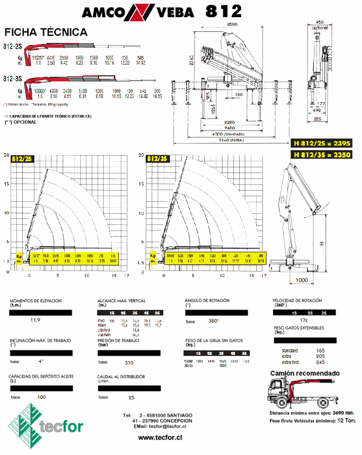

|
FICHA TÉCNICA
TECFOR |
 |
| Grúa
hidráulica italiana marca AMCO VEBA , modelo 812 / 3S para
montar sobre camión :
Grúa hidráulica de dos brazos articulados para montar sobre chasis de camión ; con accionamiento a la toma de fuerza y bomba hidráulica italiana ; equipada con dos estabilizadores de extensión lateral manual y vertical hidráulica ; tres extensiones hidráulicas ; gancho giratorio para cargas; rotación 380°; válvulas de seguridad para evitar averías por sobrecarga y/o rotura de mangueras ; cinco cuerpos de comandos en ambos costados ; manuales en español . Capacidad nominal : 11,90 tonelámetros Capacidad de carga : 4.470 kgs. a 2,50 mts. ; 1.000 kgs. a 10,16 mts. Peso grúa con estabilizadores : 1.700 kgs. Altura máxima de elevación : 13,5 mts. desde el piso Con sistema SGS , que aumenta la velocidad de extensiones sin afectar la seguridad de la grúa .
Amplia variedad de otros modelos Tecfor y Amco Veba tienen certificación ISO 9.001 en sus respectivos sistemas de gestión de calidad Garantía : 1 año a partir de su instalación , en nuestra empresa. Esta grúa requiere
un camión con al menos un peso bruto vehícular de 12 toneladas Montaje a realizarse en nuestra fábrica en 7 días hábiles, desde inicio de montaje, incluye toma fuerza . Sobrechasis completo , 3 días hábiles adicionales .  |
|

|